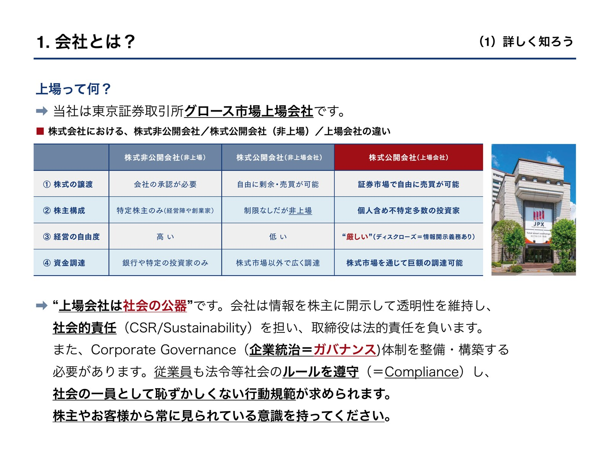
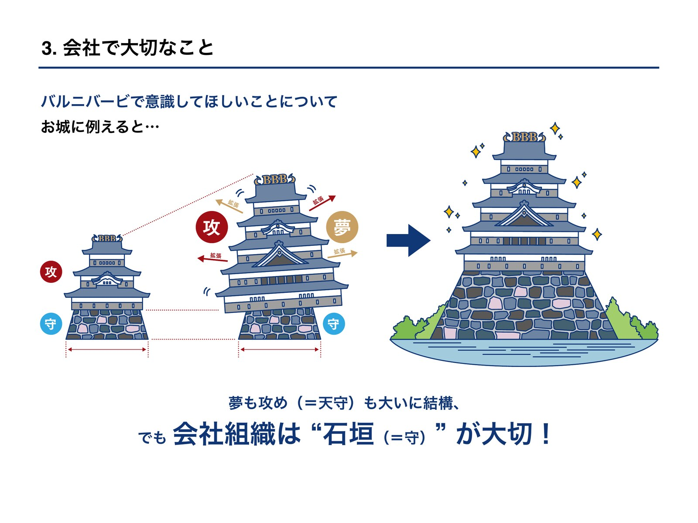
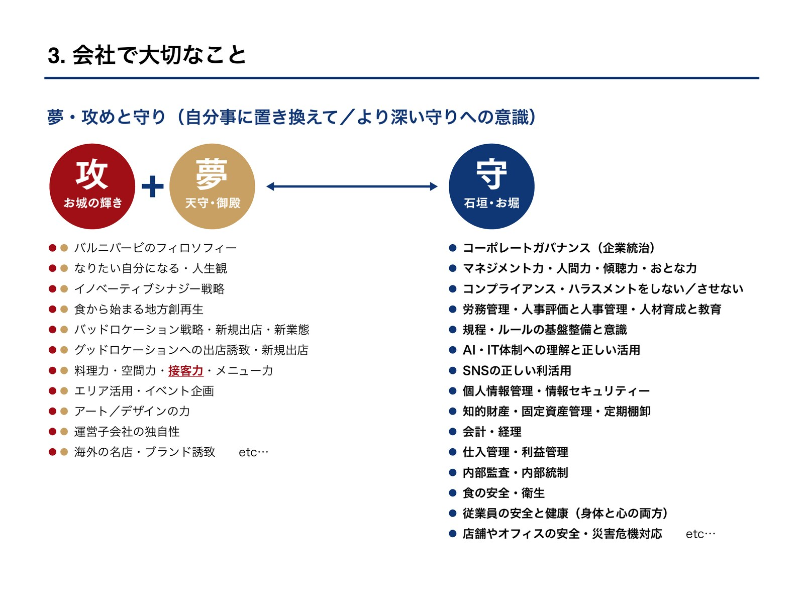
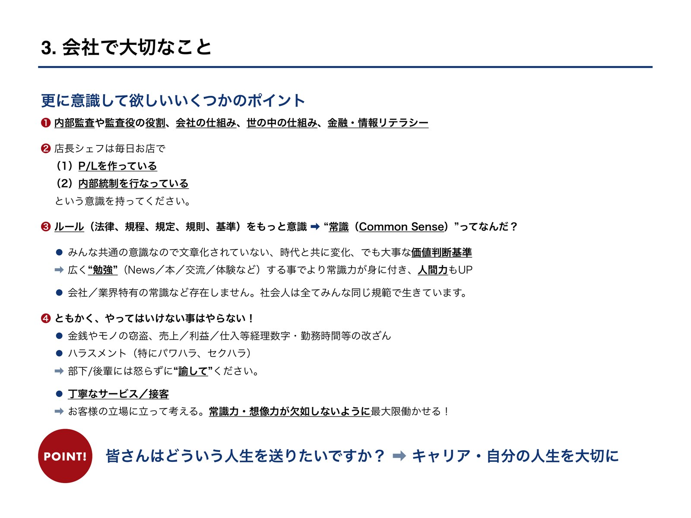
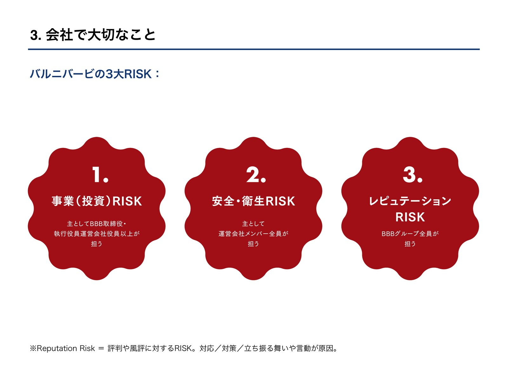
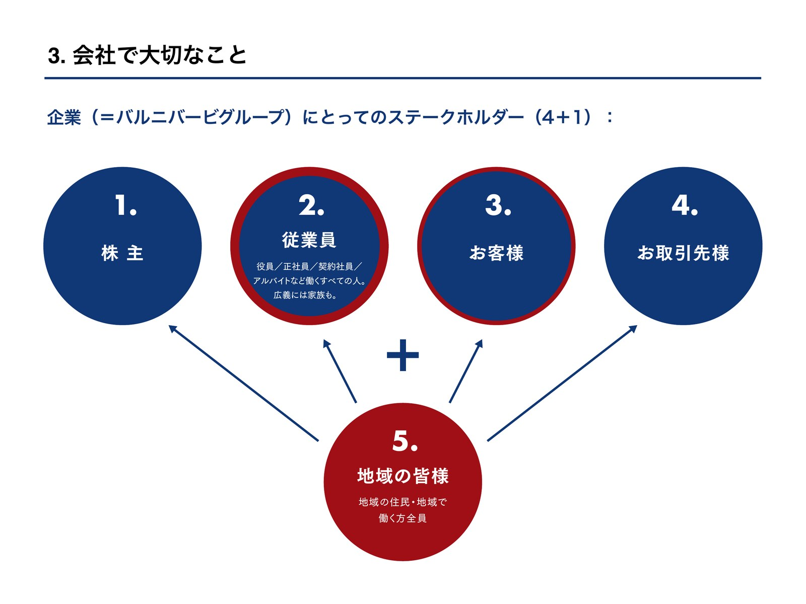

バルニバービグループ 全社共通方針
売上金の着服は、取締役自身によるものも複数件
ハラスメントを理由に、取締役自身が辞任した事案も
「未事故」でも、施設からの罰金や役員報酬の減額が発生
立場に関係なく、仕組みがなければ起きてしまう
服は下着まで濡れ、バッグの中のスマートフォンまで濡れた
危うく、そのまま帰されるところだった
対応は二転三転し、お客様から言い出さないと何も進まない
店では終わらず、会社への不信感に
「責任を持って対応してくださる、他の方にお願いいたします。」― 本部に届いたお客様の言葉
こぼすことは、どの店でも起こり得る。問題は、その後。
1〜9月のクレーム報告件数
ミスそのものより、その後の対応で大きくなる
「責任者に報告しない」「説明がない」といった事後対応で本部クレームに。約7割は後日、本部経由で届いている
研修に関わるテーマの件数
出典：クレーム報告（2024年8月〜2026年9月）。テーマ別件数はクレーム内容のキーワードによる自動判定の目安で、1件が複数テーマに該当する場合あり。
従業員が素手で作業していた
1人の投稿で、親会社の株価が1日で下がった
いずれも、現場の「たった一人」「たった一度の妥協」から始まっている。
報告・共有ができていない。個人任せにしている。それこそが、最大のガバナンスリスクになる。
お客様からの迷惑行為から、スタッフを守ることが会社の義務に
仕入れ先の偽装を見抜けなかった飲食店の管理責任も問われる
業務情報・顧客情報が一瞬で拡散
決して、他業界・他社の話ではない。
例：手袋をして盛り付ける／表記どおりのものを出す／正しく打刻する
例：起きたことを責任者に報告する／レジは2人で確認する／迷ったら本部へ
コンプライアンス・ガバナンスの徹底は、最優先の経営課題
全8カテゴリを、店舗責任者・取締役の全員が必須で受講
11月から順次開催
（各カテゴリ2回）
各カテゴリ、いずれか1回に必ず参加
監査等委員：会社の経営が正しく行われているかを、取締役の立場からチェックする役割






全8カテゴリについて、
今の皆さんの知識を、まず把握します。
評価のためではなく、
自分の現在地を知るため。
各カテゴリの基礎知識から現場の判断まで、今の理解度を確認します
わからない問題は飛ばして、わからないまま残してください。弱点が正しく見えるようにするためです
1問あたり約22秒。現場の判断と同じように、迷いすぎずに進めてください
1台のPCで複数人参加の方は、ご自身のスマートフォンで読み込んでください
今回の出席確認は、このテストの回答をもって行います残り時間は、画面を見てください
わからない問題は飛ばして、最後まで目を通してください
終了です。回答を終えてください
カテゴリ別の正答率（イメージ）
いつか起きる。
その時のための準備。
「見つける・消す・逃げる」の3つの心構え。一瞬の判断が命を分ける。
少しの妥協が、
惨事につながる。
いつの間にか、妥協が当たり前になっていませんか？
冒頭の事例：うなぎ弁当の食中毒誤魔化しは犯罪であり、
自滅である。
どんな動機であれ、時間・給与の操作は「工夫」ではなく「犯罪」。
影響力を自覚し、
出力を調整する技術。
4つのフィルターと4つのアジャスターで、自分の言動を整える。
外の事例：フジテレビ（相談を受けた後の動き方）魔が差すのは誰にでもある。
だから仕組みで防ぐ。
個人の意志の強さに頼らない。仕組みでスタッフを守る。
外の事例：プルデンシャル生命（個人任せの運営）知らなかったでは
済まされない領域。
独断せずに、まず確認。迷ったときは本部を頼る。
書いてあることと、
出すものを一致させる。
お客様との約束であり、法的な義務でもある。
自分だけじゃない。
皆で自分とお店を守る。
あなた一人の注意力ではなく、店舗全員の意識が問われる。
繁忙期の12月に向けて、11〜12月に開催。そのほかの研修は年明け以降に順次開催します
各研修のあと、3日以内に修了レポートを提出して修了です
今日のテストで最も点数の低かった章から、優先して受講してください
以前ハラスメント研修を受講した方も、内容を変更しているため必ず参加してください
全8章の内容を「こんな時どうする？」の形で掲載
バルニバービのルールと法的な根拠を、初めて一つに
損害保険対応の手順書・提出期限カレンダーも収録